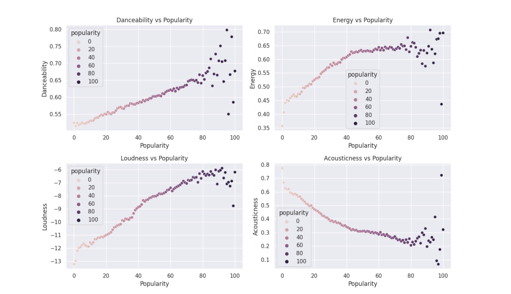
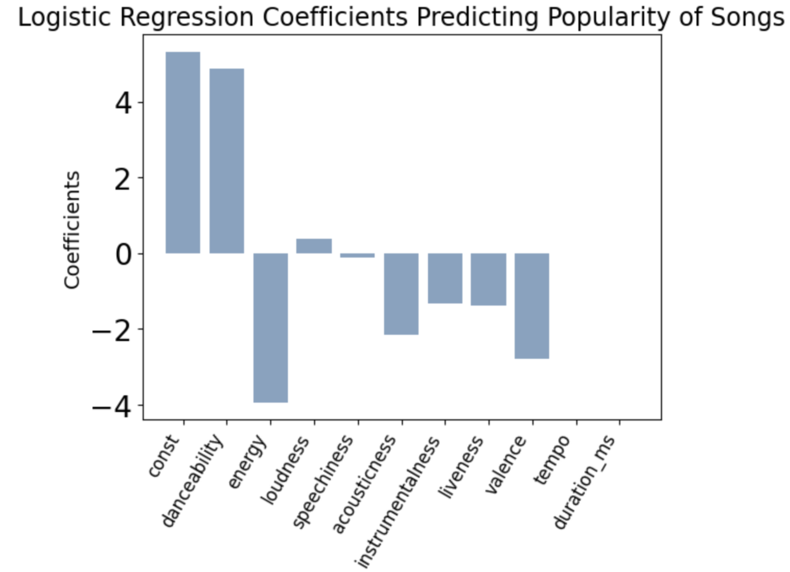
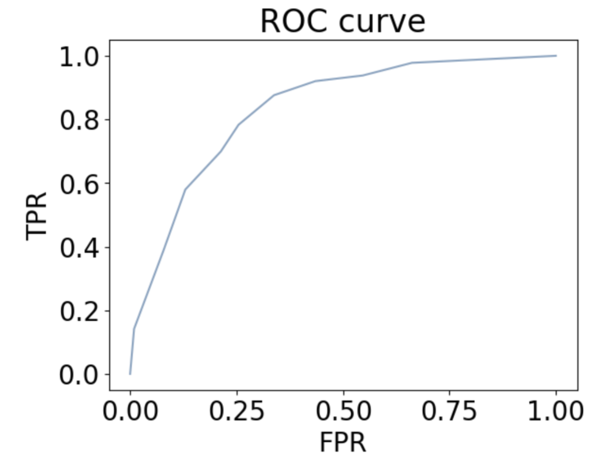

Dataset Description:
This dataset provides information from Spotify, a popular music streaming platform. It encompasses a range of factors related to popular artists and songs, including artist name, energy, song and artist popularity, duration, and danceability spanning from the 1900s to 2020. Using this dataset, we are able to explore trends and relationships between artists, songs, and popularity on the platform and gain a deeper understanding of the factors that influence them.
The dataset includes two separate tables, one for the tracks and one for artists. The table for tracks contains information about individual songs, including their titles, artists, release dates, durations, popularity ratings, danceability, energy levels which allows for the analysis of specific attributes regarding a specific track and their relationship with popularity on Spotify. Many of the features in this table are measured numerically, such as popularity levels on a scale from 0 to 100, and music-related attributes on a scale from 0 to 1, such as danceability, energy, and liveness. In terms of the data for artists, it includes details such as their name, followers, genres, and popularity that are relevant to understanding the influence of artists to track popularity.
One thing that is important to note is that the dataset may contain inconsistencies. While this dataset covers a time range starting from the 1900s, it's important to note that Spotify was launched in 2008. So, the data from before Spotify’s creation represents songs and artists that have been added to the library over time. So, there may be inaccuracies in the data in the older songs and artists included in the dataset due to the lack of data, as well as missing entries or null values in certain columns. This can occur due to several factors, such as incomplete records or errors during data collection. To accurately interpret and analyze the dataset, we will preprocess the data to deal with entries that include missing values.
Research Questions:
This project focuses on addressing several research questions related to music and artist trends in Spotify tracks. We first aim to understand the current popular songs (from 2010s to present), whether there are any discernible trends or patterns, and predicting the characteristics that will define future popular song trends. In depth, we examine the influence of factors such as tempo and danceability on the popularity of tracks on Spotify. By analyzing these different ideas, we aim to determine the extent to which they influence the popularity of songs on the platform and establish their significance in music popularity.
In terms of the target audience, this dataset can be significant for several stakeholders related to the music industry. Professionals like record labels and artists, can use the insights from the analysis to inform their marketing and promotion strategies. By understanding the factors that contribute to song popularity, they can make data-driven decisions to increase their engagement on Spotify. Additionally, music platforms can apply various data analysis methods to this dataset to develop predictive models or improve personalized music recommendations systems. Overall, it offers a wide range of possibilities for exploration that can be applied in the real-world context of the music industry.
Impact of Music Characteristics on Song Popularity :

The scatterplots showcase the correlation between several audio features of interest (danceability, energy, loudness, and acousticness) and popularity of the songs. The plots suggest that danceability, energy, and loudness have positive correlations with popularity, while acousticness has a negative correlation.
Since this visualization showed a generally linear relationship between these audio features and popularity, we created a linear regression model to further examine this. We aimed to explore the influence of various factors on the popularity of tracks on Spotify and understand how certain characteristics of tracks relate to their overall popularity. We focused on four key audio features: danceability, energy, loudness, and acousticness as they were the attributes in the correlation matrix that had the highest influence on the popularity of a track. To prepare the data, we filtered the tracks dataframe to only include the relevant columns and removed any rows with missing values.
Using the Ordinary Least Squares method, we looked into the regression summary of the model to gain insight into the relationships between these audio features and the popularity of a track. We obtained a R-squared value of 0.173, which means that approximately 17.3% of the variance in track popularity can be explained by these music attributes. As this R-squared value is fairly low, it shows that these audio features do not fully account for the variations in song popularity. We found that danceability had the strongest influence on song popularity, as indicated by its coefficient of 8.8871. Other features like energy, loudness, and acousticness, while having smaller coefficients, still had significant effects on song popularity with p-values below 0.05.
With these findings, we were able to see that while higher danceability, energy and loudness tend to be associated with greater popularity, high levels of acousticness were linked to lower popularity. While it was interesting to find out that danceability was the audio feature that influenced popularity the most, it is important to note that the linear regression model was not highly accurate and the music attributes did not fully account for the variance of popularity of tracks. This means that while the music-based factors have an influence on the popularity of a song, there may be other external factors, such as marketing tactics, cultural trends, and artist popularity, that likely play a significant role in determining the popularity of a song on Spotify.
Impact of Music Characteristics on Song Popularity (2):

Another approach to observe the impact of music characteristics on song popularity was to create a logistic regression model in order to incorporate all the characteristics that were given in the dataset to compare which characteristics are more significant than others.
Since the scale of the ‘popularity’ column from the dataset was 1-100, we assumed ‘popular’ songs to have a ‘popularity’ value of 80 or higher. Then, one-hot encoding was processed for the model to complete the classification. From fitting the logistic regression model, characteristics that were significant were ‘danceability’, ‘energy’, ‘loudness’, ‘acousticness’, ‘liveness’, and ‘valence’ considering the significant value as 0.05. Based on the magnitude of the coefficients and the P>|z| value, we can observe that the ‘danceability’ and ‘energy’ are impacting the popularity of the songs the most. Songs with 80 or higher ‘popularity’ scales usually have high in ‘danceability’ and ‘loudness’ values and low in ‘acousticness’, ‘liveness’, and ‘valence’ values.

To observe the performance of the logistic regression model is accurate, we created a ROC curve where it plots the True Positive Rate (TPR) over False Positive Rate (FPR). The most accurate model that is reflected on the ROC curve is when it predicts all the zeros to be accurate meaning the closer the graph is to (0, 1) the higher accuracy it has. With Figure 3 shown above, we can ensure that the logistic regression model is not a random model.
Overall, we can predict future music trends from our logistic regression model. In order for artists to aim for a ‘popularity’ value of 80 or higher, they should aim for their music to have high ‘danceability’ and low ‘energy’ characteristics.
Examining Chart Frequency and Artist Popularity:
To explore the relationship between artist popularity and the frequency that they appear in popular songs, we preprocessed the data by merging the artists and tracks data, ensuring that the relevant columns for our analysis was available and removing any entries that had missing values. The analysis primarily focused on artist popularity, followers and song popularity as we aimed to explore the influence of artist popularity. In modeling the relationship, we found that the linear model was highly inaccurate, so we opted to use Random Forest to explore the complexities and nonlinearity of the data. As the combined dataset was very large, we used data sampling to get a representative subset and ensure computational efficiency. To get a general overview of the trends and improve model accuracy, we used binary classification as it allows us to distinguish between two categories: songs that are popular and songs that are not. We set a threshold of 50 for popularity to categorize it in a more straightforward and easy to interpret manner. Then, we used an 80-20 train-test split to evaluate the classification model's performance, with 80% of the data used for training and 20% for testing. With these modifications, we were able to obtain an accuracy score of 89%.
Overall, this indicates that there is a strong association between artist popularity and the popularity of their tracks. When an artist is popular, their songs are more likely to be popular as well. This analysis is relevant as it provides empirical evidence supporting the hypothesis that artist popularity plays a significant role in driving the popularity of their songs.
Conclusion:
By utilizing linear regression model, logistic regression model, and random forest model, we were able to conclude that recent popular models (from 2010s to present) contain high danceability and low energy scores from the dataset we retrieved. These observations can be transformed to a prediction that the future music trend will maintain these music characteristics. Music industry professionals can utilize these insights to inform their strategies, while music platforms can improve their recommendation algorithms. Further research could expand on this by exploring additional factors and their effects for a more detailed understanding of song popularity.